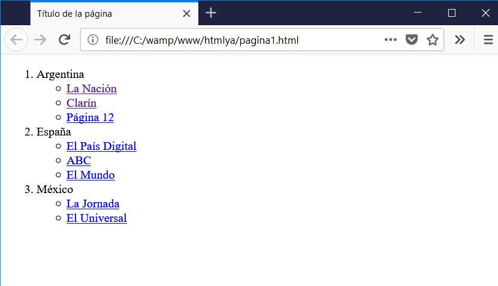

El proposito de este sitio surge de la necesidad que se presento con la llegada del Covid 19, la cual es indispensable para nuestro aprendizaje, atraves de esta pagina podemos aprender con videos explicativosn contenidos que te ayuden en tu proceso de aprendizaje de una manera didactica.
abordaremos el tema de Flex Box, Listas y enlaces
Flex Box

Flex es uno de los nuevos valores HTML5 para propiedad CSS display, que nos permite maquinar nuestras páginas web de una manera mucho más fácil de lo que se hacía con la forma tradicional, en la que utilizábamos propiedades como float o position, entre otras.El módulo de diseño de caja flexible, más comúnmente conocido como flexbox , es una
herramienta poderosa para crear diseños con CSS y le permite especificar contenedores y su contenido en su lugar.
WEYL, Estelle. Flexbox en CSS . "O'Reilly Media, Inc.", 2017.
Listas y Enlaces

Listas
Las listas en HTML nos permite crear conjuntos de elementos en forma de lista dentro de una página, todos los cuales irán precedidos, generalmente, por un guión o número. Los tipos de listas en HTML son los siguientes: Listas ordenadas. Listas desordenadas.Las listas en HTML nos permite crear conjuntos de elementos en forma de lista dentro de una página, todos los cuales irán precedidos, generalmente, por un guión o número. Los tipos de listas en HTML son los siguientes: Listas ordenadas.
Enlaces

En el HTML los enlaces se marcan con la etiqueta y el atributo principal es href="" donde se escribe la ubicación del archivo de destino que puede estar en la misma carpeta que el archivo que lo está llamando, en otra carpeta del mismo sitio o en otro sitio web.Entre las etiquetas se puede colocar cualquier elemento html que funcionará como botón, generalmente se coloca un texto o una imagen. Si es un texto, el navegador por defecto lo muestra en color azul y subrayado. Si es una imagen, algunos navegadores especialmente las versiones anteriores a las actuales, le pueden agregar un borde azul.
Tipos de enlaces en HTML - Laura Chuburuhttps://www.laurachuburu.com.ar